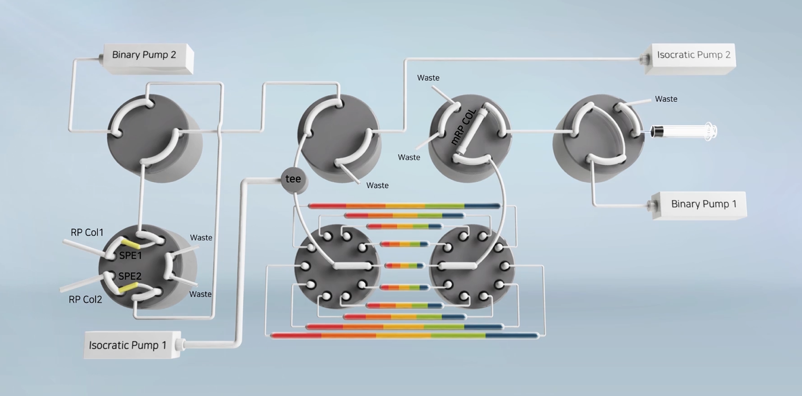
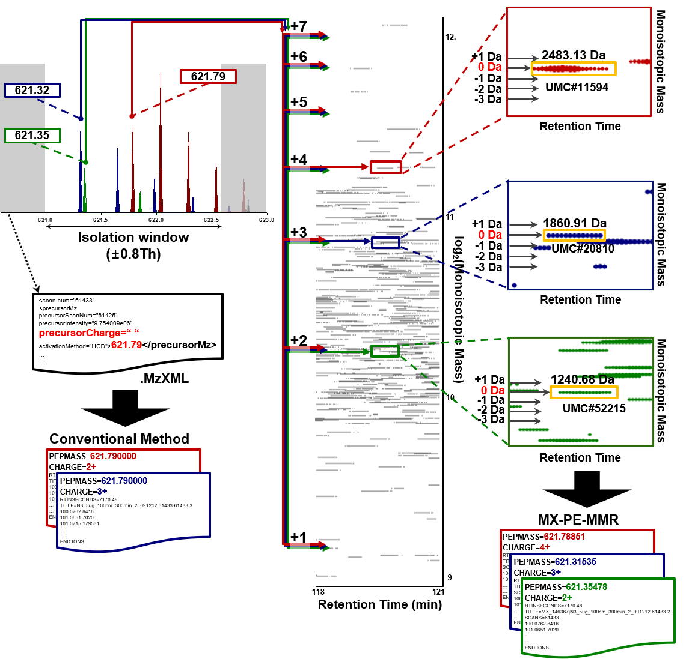

교육부지정 핵심연구지원센터인 유전단백체연구센터는 유전단백체학(Proteogenomics) 에 기반한
정밀의료(Precision Medicine) 실현을 추구하고 있습니다.
유전단백체학(Proteogenomics) 이란?
환자 시료(조직 및 혈액)로 부터 광범위한 유전체데이터와 단백체데이터를
생산하고, 이들의 통합분석을 통해 질병/질환에 대한 보다 정확한 정보를 얻고, 이를 통해 정확한 질병 진단 및 예후 예측
그리고 개선된 맞춤형 치료를 추구하는 차세대 정밀의료연구입니다.
정밀의료(Precision Medicine)란?
미국 NIH Director인 Francis S. Collins 박사에 의하면 정밀의료는
"개인적 차이를 고려한 예방 및 치료 (NEJM 2015, 372(9), 793)"로 정의됩니다. 인류의 보건을 위해 전 세계적으로
다양한 연구가 진행되고 있으며, 유전단백체학은 정밀의료의 핵심이며, 세계적 표준연구로 자리매김 하고 있습니다. 우리 센터는 위암,
췌장암, 자궁경부암 등 한국인 주요 암질환에 대한 유전단백체 데이터를 생산하고, 이들 다층데이터의 통합분석을 통해 국가 암 정밀의료
연구를 주도하고 있습니다.
ICPC (International Cancer Proteogenome Consortium)
‘비연속적 시료 분획 및 통합 (Noncontiguous Fractionating and Concatenating, NCFC)’
기술을 적용한 새로운 형태의 온라인 이차원 액체크로마토그래피 기술 개발

‘비연속적 시료 분획 및 통합’기술을 온라인 이차원 액체크로마토그래피 장치에 도입한 세계 최초의 기술을 개발하여 기존의 오프라인
비연속적 시료 분획 및 통합방법에서 필요로 했던 수작업 실험과정 및 소요시간을 최소화 하였고, 또한 이 과정에서 발생했던
시료 및 정보의 손실을 최소화 하였다. 이를 통해 극미량의 시료로부터 고정보력을 갖는 프로테옴 분석이 가능하도록 하였으며 국내
액체크로마토그래피기술 중 최초로 5극 특허(한국, 중국, 일본, 미국, EU)를 출원하였다.
논문 링크: https://doi.org/10.1021/acs.analchem.6b03366
mPE-MMR

mPE-MMR은 PE-MMR의 확장된 버전으로서 isolation-width내에 여러 Peptide ion이 있을 경우 해당 Peptide를 각각 동정할 수
있도록 지원합니다. 대부분의 DDA(Data Dependent Acquisition) 방식의 tandem ms/ms는 대상으로 하는 m/z를 기준으로
허용범위를 주고 isolation을 하게 되고, 이 때 서로 다른 Peptide Ion이 섞여 들어갈 수 있는 찬스가 생기게 됩니다. 이는 시료의
복잡도에 따라서도 영향을 미치기도 합니다. mPE-MMR은 동시에 tandem ms/ms가 된 여러 Peptide Ion을 예측하여
Protein Database 써치를 통해 각각의 Peptide를 동정할 수 있도록 지원합니다.
논문 링크: https://doi.org/10.1021/acs.analchem.9b01474